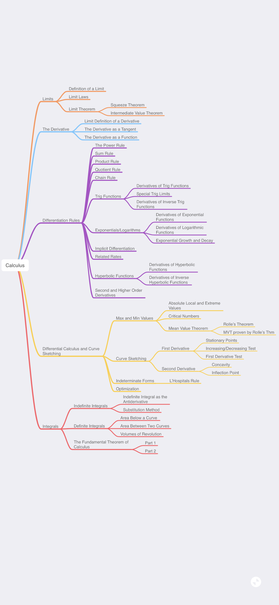
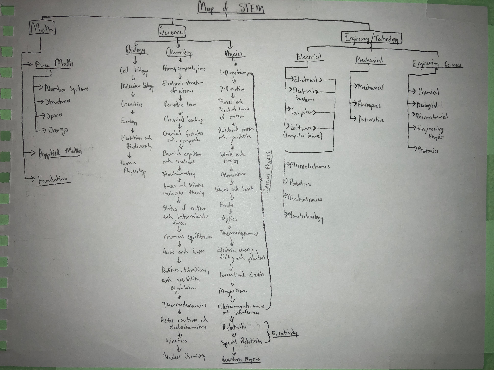
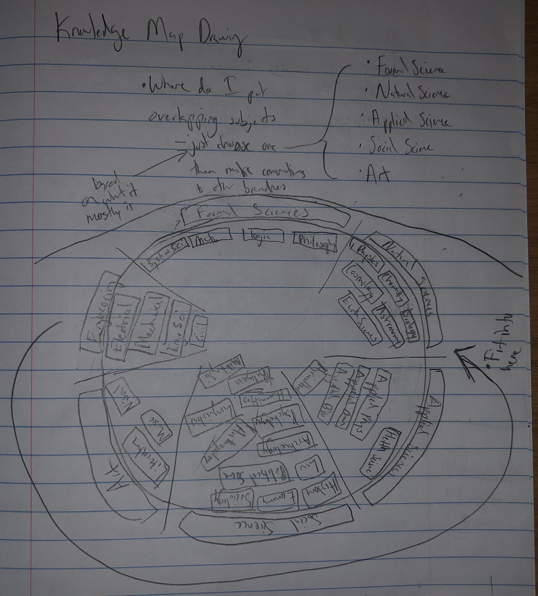
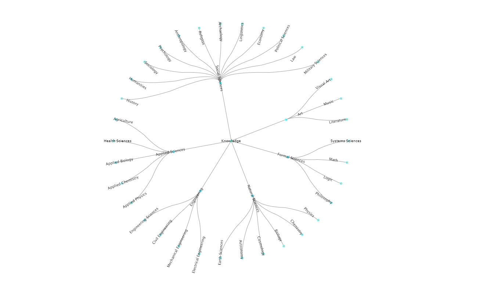
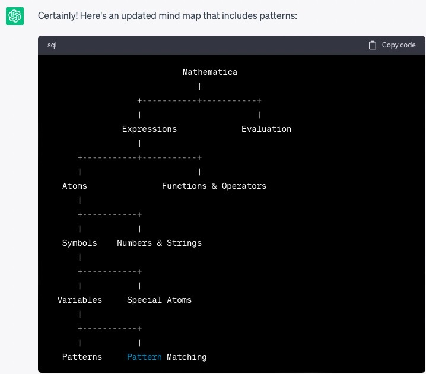
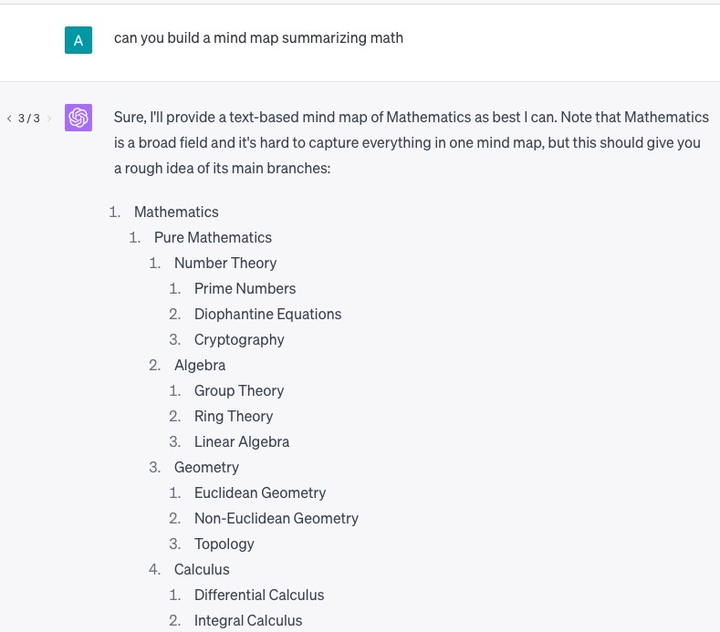
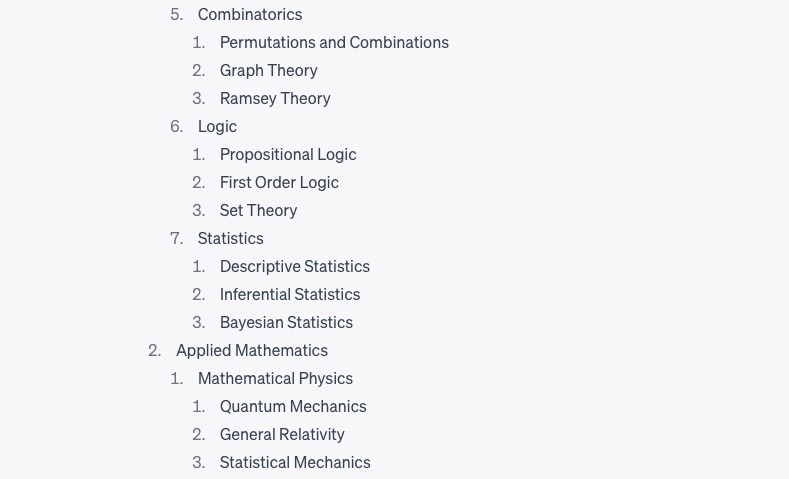
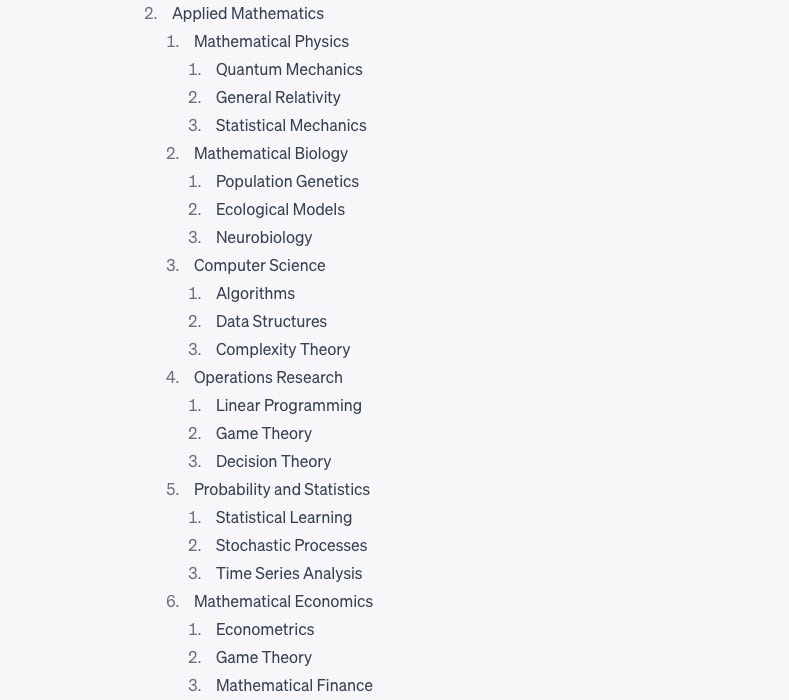

Evolutionary Ontology of the Domain of Knowledge
Here's an example of a fully fleshed out node.
This node is for DifferentialCalculus
I wanted to create a mindmap for all of STEM so I had a roadmap for all the things I wanted to create.
Then I started thinking I should do this for all of human knowledge.
I decided it would be much easier for me to work on this if I could make an app to store and make the map more aesthetic.
I then decided to change the structure to more tree like, rather than chord diagram like.

Thinking thru this led me down an interesting path into epistomology and eventually what my friend Alec coined: Consciousness First framework
Realizing that there are multiple frameworks for how people would think the map should be I decided it would be best to make this into a website where many people could contribute to how they believed the map should be, and hopefully we could reach global consensus on a framework for representing knowledge.
I find parallels from how Stephen Wolfram wanted to work on computational knowledge, I wanted to work on categorical knowledge.
It would basically make the search thru knowledge much easier, so that one can find connections between topics.
Also I have been very interested in BCIs, and was wondering about how we could search and store info into our brains. I also was curious to what epistomology an AGI would create.
So it was really a combination of ideas and thoughts that culminated in this project.
If something like Wikipedia exists (a repository of human knowledge), then it makes sense Knowledge Map should exist (a repository of the categorizations of human knowledge)
These are kinda just ramblings, I'll sharpen them up later
- Similar concept to how MIT has OCW
Wikiverse is a rendering of wikipedia as a galactic 3D model.
Using ChatGPT to create mindmaps: essentially creating structure out of all the information it has encoded.
Mindmap for Mathematica built with ChatGPT 3.5:
Textual Mindmap for Mathematica built with ChatGPT 4:
Obviously math is a much broader and harder subject to cover, but it did a relatively decent job.
  